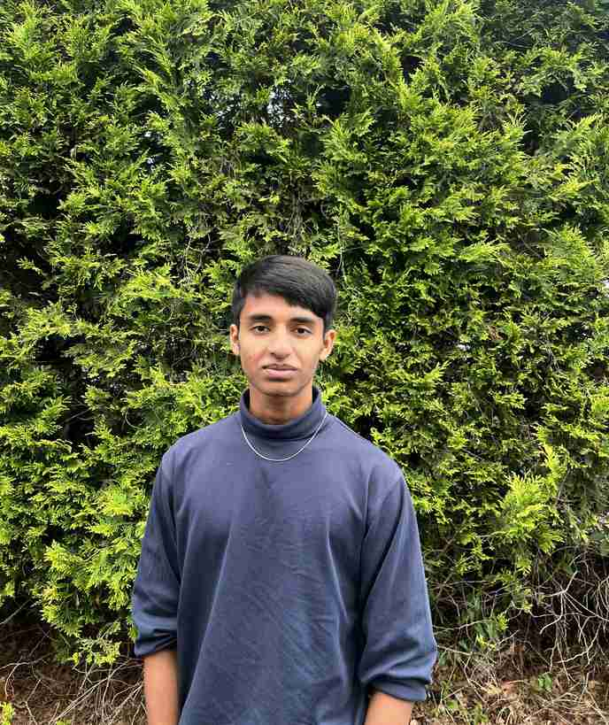

Avanish Yadav
Tech Director
Hi, my name is Avanish Yadav and I'm a rising senior at high school. I'm passionate about using technology to empower others. As the Tech Director, I love solving problems and helping people navigate the digital world.
I believe that patient, clear communication and a little creativity can turn tech frustrations into smooth, stress free experiences. My background in troubleshooting hardware at the basic level, optimizing software, and assisting users has strengthened my problem solving skills, and I'm excited to apply them to make a real difference here.
When I'm not fixing tech issues, you'll find me gaming, exploring unreal or unity (for game development), or doing taekwondo.